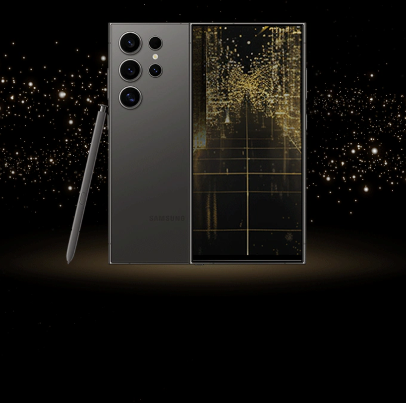
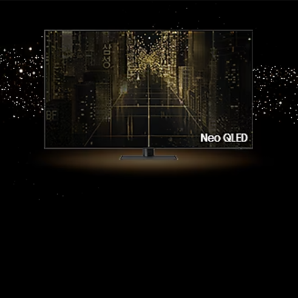
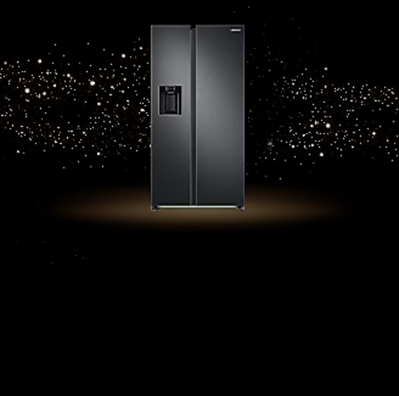

Samsung's products are renowned for their cutting-edge technology and sleek designs.Their smartphones, like
the Galaxy series, feature high-resolution AMOLED displays, advanced camera systems, and powerful processors
for seamless multitasking. Additionally, Samsung's home appliances integrate smart features, allowing users
to control devices remotely and enhance efficiency in daily tasks.
Samsung Galaxy S24 Ultra

Galaxy S24 Ultra - Innovation and design.
The Galaxy S24 Ultra combines cutting-edge innovation with premium design. Its 6.8-inch Dynamic
AMOLED 2X display offers stunning clarity and smooth 120Hz refresh rates. Powered by the latest
Snapdragon 8 Gen 3 processor, it delivers lightning-fast performance for multitasking and gaming.
The S24 Ultra's 200MP quad-camera system captures incredible detail in any lighting, while its
built-in S Pen provides precision for note-taking and creative tasks. With a robust Titanium
frame, IP68 water resistance, and all-day battery life, the S24 Ultra is built for durability and
efficiency.
Samsung TV

Neo QLED 8K - Immersive clarity and AI-powered performance.
The 65” Neo QLED 8K QN800D Smart AI TV (2024) delivers an unparalleled viewing experience with
breathtaking 8K resolution and Quantum Matrix Technology for precise contrast and vivid colors.
Powered by the Neural Quantum Processor 8K, it uses AI to upscale content to stunning clarity. Its
ultra-slim Infinity One Design blends seamlessly into any space, while the Anti-Reflection screen
ensures optimal viewing from every angle. With built-in Smart Hub and Alexa, the QN800D provides
effortless access to streaming, gaming, and voice control. Dolby Atmos and Object Tracking Sound+
complete the experience with immersive, cinema-quality audio.
Samsung Fridge

SpaceMax™ Fridge - Spacious, smart, and energy-efficient.
The Series 8 SpaceMax™ RS68A884CB1 American-Style Smart Fridge Freezer offers spacious storage and
cutting-edge convenience in a sleek Black Stainless design. Its SpaceMax™ technology maximizes
interior capacity without increasing external dimensions, while Twin Cooling Plus™ keeps food
fresher for longer by optimizing humidity and temperature. With integrated SmartThings connectivity,
you can monitor and control the fridge remotely. The built-in Beverage Center™ provides quick access
to chilled drinks, and the AutoFill Water Jug ensures effortless hydration. Energy-efficient and
stylish, this fridge freezer is designed for modern living.
1.png)